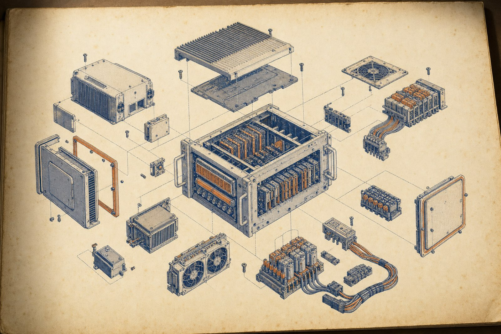
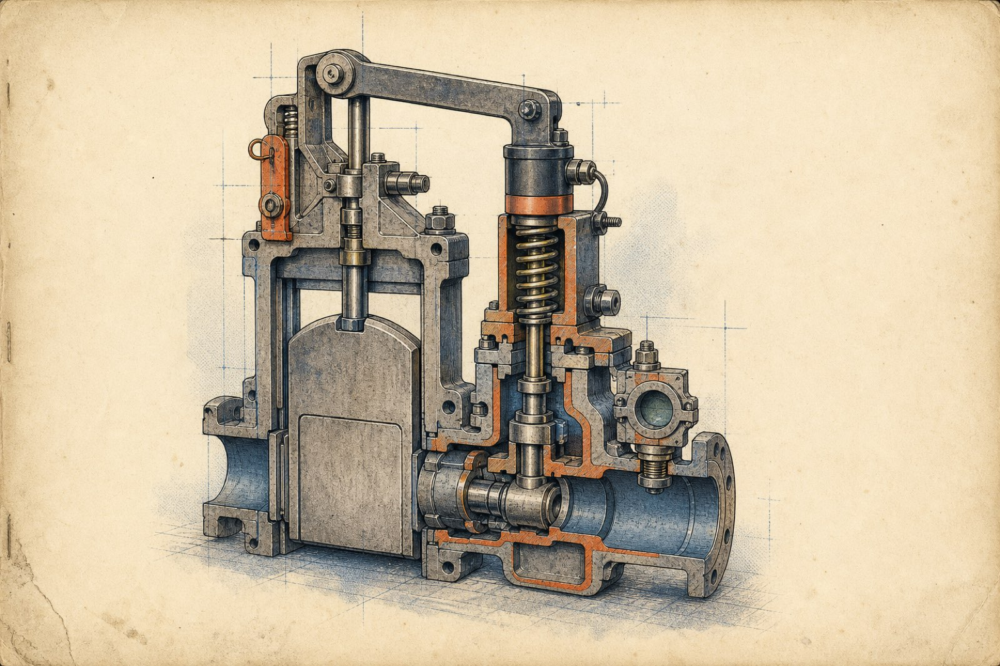
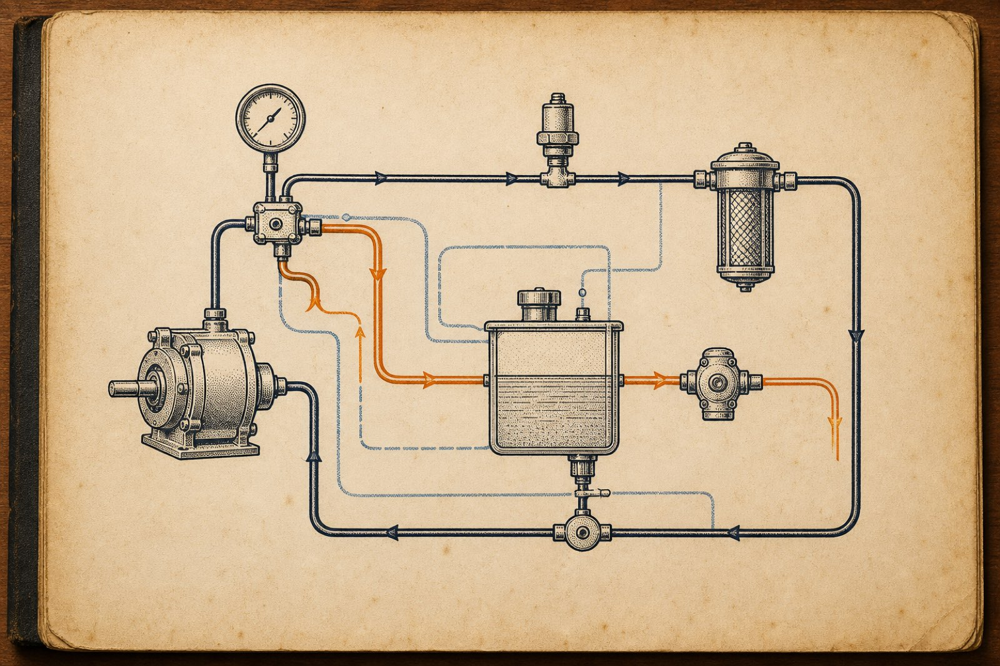

1
1.1 Proof-of-done unit
The runtime re-runs real checks. Exit codes decide done, never the model's self-report.
Spec: the AI does not grade its own work.CAR is a program you install on your own computer that runs AI agents and looks after them: it keeps them alive in the background, restarts them when they crash, and stops to ask your permission before anything risky — it can even text you for the OK.
Its signature habit is proof: for coding jobs and goal runs it writes down up front what done must look like as real checks, then re-runs those checks itself and refuses to say finished until they actually pass.
The thinking can come from cloud models, local models, or agents like Claude Code; either way the work, the rules, and the receipts stay on your machine.
We run our own fleet of agents on it every day — it is the harness we trust them with.

123Model identification and service intent
CAR is not a chat window. It is a supervised runtime installed on your own computer, built for long-running agents that need a home, a restart policy, and a hard rule that risky work stops for permission.
Read it like a machine with three serviceable assemblies. The proof assembly checks the work after the model claims it is finished. The supervision assembly keeps the agent alive and asks before risky operations. The brain coupling lets different thinking engines connect without giving away the harness, rules, files, or receipts.
The runtime re-runs real checks. Exit codes decide done, never the model's self-report.
Spec: the AI does not grade its own work.Agents persist in the background, auto-restart on crash, and stop to ask permission before risky work, even by text message.
Spec: supervised persistence with approval stop.Cloud models, local models, or agents like Claude Code can do the thinking while the work, rules, and receipts stay on your machine.
Spec: pluggable brains, owned harness.Do not evaluate this machine by the charm of the driver. Evaluate it by whether the service checks run after the driver says the job is done.
Operating cycle, normal service
CAR is installed on the computer that owns the work. The changed files, rules, and receipts stay there, not inside a rented chat surface.
The runtime keeps the agent running in the background and restarts it when it crashes. The agent is treated as a worker process that needs a harness.
Before anything risky, CAR stops and asks permission. The approval can reach the operator by text message when the machine needs the OK away from the bench.
For coding jobs and goal runs, CAR writes down what done must look like as real checks, then re-runs them itself before accepting completion.
Restart policyAuto-restart on crash |
Permission gateStops before risky work; can text for OK |
Evidence storageWork, rules, and receipts stay on your machine |
Brain interchangeCloud models, local models, or agents like Claude Code |
LicenseApache-2.0 |
Risk stop and operator permission

123Risky work does not pass through as ordinary flow. It is detected as a permission event.
Service action: pause.The runtime asks before continuing, including by text message when that is the practical route.
Service action: obtain OK.If the agent crashes, CAR brings the process back under the same supervised runtime.
Service action: restart in harness.Never substitute a model's confident explanation for operator approval. The gate exists because risky work belongs under human permission.
Completion circuit and re-check loop

123The job starts with real checks written down as the definition of done.
Medium: executable evidence.CAR re-runs those checks itself after the agent claims completion.
Acceptance: exit codes.If checks do not pass, the runtime refuses to say finished. The AI does not get to grade its own work.
Failure mode: not done.The thinking is rented from clouds and chat windows; the work itself — the files it changes, the rules it must obey, the evidence that it did what it claims — deserves to live somewhere you own.
Installable parts and release counter
Order the part that matches the bench. The macOS package installs CAR Host.app plus the car CLI. Windows operators may use Scoop or the installer. Developers may fit the runtime through npm or pip.
| Part No. | Description | Application | Order |
|---|---|---|---|
CAR-DARWIN-ARM64-PKG | CAR-darwin-arm64.pkg | macOS, Apple Silicon, macOS 26+. One double-click installs CAR Host.app + the car CLI. | CAR-darwin-arm64.pkg |
CAR-WIN-SCOOP | Scoop installation path | Windows package route. | |
CAR-WIN-EXE | CAR-setup-x64.exe | Windows installer route. | CAR-setup-x64.exe |
CAR-NPM-RUNTIME | Developer runtime package | JavaScript projects. | |
CAR-PIP-RUNTIME | Developer runtime package | Python projects. |
CAR is Apache-2.0 licensed.